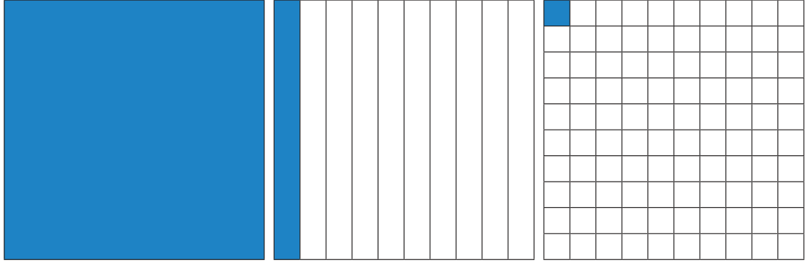
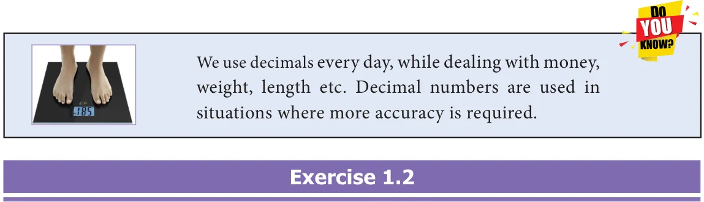

<!DOCTYPE html>
<html lang="en">
<head>
<meta charset="UTF-8">
<meta name="viewport" content="width=device-width,initial-scale=1">
<title>1.3 Operations on Decimal Numbers — Number System</title>
<meta name="description" content="Class 7 Mathematics · Term 3 · Number System · 1.3 Operations on Decimal Numbers">
<link rel="icon" href="data:image/svg+xml,<svg xmlns='http://www.w3.org/2000/svg' viewBox='0 0 100 100'><text y='.9em' font-size='90'>📘</text></svg>">
<link rel="stylesheet" href="../../../assets/book.css">
<link rel="stylesheet" href="https://cdn.jsdelivr.net/npm/katex@0.16.11/dist/katex.min.css" crossorigin="anonymous">
</head>
<body>
<header class="topbar">
<div class="topbar-in">
  <div class="crumb">
    <span class="c1"><a href="../../../index.html">Library</a> · <a href="../../index.html">Class 7 Mathematics · Term 3</a></span>
    <span class="c2">Number System · 1.3 Operations on Decimal Numbers</span>
  </div>
  <a class="tb-btn" data-nav="prev" href="../../01-number-system/03-exercise-1.1/index.html" title="Exercise 1.1">←</a>
  <details class="drawer"><summary class="tb-btn" title="Sections in this chapter">☰</summary>
<div class="drawer-panel"><div class="dh">Number System</div><a href="../01-chapter-opener/index.html">Chapter opener; 1.1 Introduction</a><a href="../02-rounding-of-decimals-1.2/index.html">1.2 Rounding of Decimals</a><a href="../03-exercise-1.1/index.html">Exercise 1.1</a><a href="../04-operations-on-decimal-numbers-1.3/index.html" aria-current="page">1.3 Operations on Decimal Numbers</a><a href="../05-exercise-1.2/index.html">Exercise 1.2</a><a href="../06-multiplication-of-decimal-numbers-1.3.2/index.html">1.3.2 Multiplication of Decimal Numbers</a><a href="../07-exercise-1.3/index.html">Exercise 1.3</a><a href="../08-division-of-decimal-numbers-1.3.3/index.html">1.3.3 Division of Decimal Numbers</a><a href="../09-exercise-1.4/index.html">Exercise 1.4</a><a href="../10-exercise-1.5/index.html">Exercise 1.5</a><a href="../11-summary/index.html">Summary</a><a href="../12-ict-corner/index.html">ICT Corner</a></div></details>
  <a class="tb-btn" data-nav="next" href="../../01-number-system/05-exercise-1.2/index.html" title="Exercise 1.2">→</a>
  <button class="tb-btn" data-theme-toggle title="Toggle light / dark" aria-label="Toggle light or dark theme">◐</button>
</div>
<div class="progress"><span style="width:6.8%"></span></div>
</header>
<main class="wrap">
<div class="sec-head">
  <p class="eyebrow"><a href="../index.html">Chapter 1 · Number System</a></p>
  <h1>1.3 Operations on Decimal Numbers</h1>
  <p class="sec-meta">Textbook pages 4–10 · 23 figures</p>
</div>
<article class="prose">
<p>Already we are familiar with decimal numbers. We know how to represent a decimal number as a fraction and the place values of digits. Now, let us learn the operations on decimal numbers.</p>
<h3 id="s-1-3-1-addition-and-subtraction-of-decimal-numbers">1.3.1 Addition and Subtraction of Decimal Numbers</h3>
<p>Iniya has purchased notebooks for ₹ 46.50 and a pencil box for ₹ 16.50. How much will she get as balance if she paid ₹ 100 to the shop keeper?</p>
<p>Price of a note book = ₹ 46.50 ; Price of a pencil box= ₹ 16.50 To find the amount to be paid, we have to add the price of both the items. To get the balance amount we have to subtract the total expense from ₹ 100. To know the total expenses and the balance money, we need to understand addition and subtraction of decimals.</p>
<p>Addition and subtraction of decimals through models</p>
<p>Decimal grid or area models can be used to understand the process of addition and subtraction using decimal numbers.</p>
<ul class="qlist">
<li><span class="mk">(i)</span><span class="lt">Grid model</span></li>
</ul>
<p>We see below the grids to represent the decimal numbers 1.0, 0.1 and 0.01.</p>
<figure class="fig table-fig wide"></figure>
<p>One whole, 10 by 10 Each column represents Each square represents one Grid represents 1 or 1.0 one tenth or 0.1 hundredth or 0.01</p>
<p>Having these grids let us try to do addition and subtraction of decimal numbers.</p>
<p>Example 1.5 Find the sum of 0.16 and 0.77 using decimal grid models.</p>
<h4 class="callout-h" id="s-solution">Solution</h4>
<figure class="fig side-fig"><figcaption>Fig. 1.2</figcaption></figure>
<p>Here, \(0.16= \frac{16}{100}\) and 0 77. \(= \frac{77}{100}\) First shade the region 0.16 and then shade 0.77.</p>
<p>That is, first shade 16 squares out of 100 and then shade 77 more squares, which means total shaded region is 93 squares out of 100. The total shaded area is the sum.</p>
<div class="mathblock"><p>So, \(0.16 + 0.77 = 0.93\) .</p></div>
<p>Example 1.6 Find \(0.52 - 0.08\) using decimal grid models.</p>
<figure class="fig side-fig"></figure>
<h4 class="callout-h" id="s-solution">Solution</h4>
<div class="mathblock"><p>\(\frac{52}{100} \frac{8}{100}\)</p></div>
<p>Here 0 52. = and 0 08. = . First shade the region</p>
<p>0.52 then cross out 0.08, which is \(\frac{8}{100}\) from the shaded area. The left out shaded region without cross marks is the</p>
<div class="mathblock"><p>difference. So, 0 52. \(- 0 08\). \(= 0 44\). .</p></div>
<p class="caption">Fig. 1.3</p>
<p>Example 1.7 Find the value of \(0.72 - 0.51\) by using grids.</p>
<h4 class="callout-h" id="s-solution">Solution</h4>
<figure class="fig side-fig"></figure>
<p>Take a square of 100 boxes. Shade 72 boxes to</p>
<p>represent 0.72.</p>
<p>Then strike out 51 boxes out of 72 shaded boxes to</p>
<p>subtract 0.51 from 0.72.</p>
<p>The left over shaded boxes represent the required value.</p>
<div class="mathblock"><p>Therefore, \(0.72 - 0.51 = 0.21\).</p></div>
<p class="caption">Fig. 1.4</p>
<figure class="fig wide"></figure>
<ul class="qlist">
<li><span class="mk">(ii)</span><span class="lt">Area model</span></li>
</ul>
<p>The whole number (unit place) which is a part of decimals represents a</p>
<figure class="fig"></figure>
<div class="mathblock"><p>\(\frac{1}{10}\) th</p></div>
<p>th</p>
<p>square area and part of this square area which is a thin rectangular strip</p>
<p>represents the tenth place of the decimal (0.1) and \(\frac{1}{100}\) part of this square area which is a smaller square represents the hundredth place value (0.01) and the same process will be continued for the next place and so on.</p>
<figure class="fig table-fig wide"></figure>
<aside class="sidenote"><p>0.01</p></aside>
<p>Having these square and rectangular area let us try to do addition and subtraction of decimal numbers.</p>
<figure class="fig wide"></figure>
<p>Example 1.8 Add \(3.2 + 6.4\).</p>
<h4 class="callout-h" id="s-solution">Solution</h4>
<figure class="fig table-fig"></figure>
<figure class="fig table-fig side-fig"></figure>
<p>Here 3.2 is represented in Blue colour and 6.4 is represented in Green colour. Hence, the sum of 3.2 and 6.4 is 9.6.</p>
<p>Example 1.9 Subtract \(7.5 - 3.4\) .</p>
<figure class="fig table-fig side-fig"><figcaption>Fig. 1.5</figcaption></figure>
<h4 class="callout-h" id="s-solution">Solution</h4>
<p>First represent the decimal number 7.5 using 7 squares and 5 rectangular strips. Cross out 3 squares from 7 squares and 4 rectangular strips from 5 rectangular strips to get the difference (see Fig. 1.5).</p>
<div class="mathblock"><p>Hence, \(7.5 - 3.4 = 4.1\).</p></div>
<figure class="fig wide"></figure>
<ul class="qlist">
<li><span class="mk">(iii)</span><span class="lt">Place value grid model</span></li>
</ul>
<p>So far we have discussed grid models to do addition and subtraction of decimal numbers. Earlier we have studied representation of decimal numbers in place value tables. Let us use the same representation for addition and subtraction of decimal numbers. For example, while adding 4.83 and 1.67, we have</p>
<figure class="fig table-fig"></figure>
<div class="mathblock"><p>Therefore, \(4.38 + 1.67 = 6.05\).</p></div>
<p>Example 1.10 Add the following : (i) \(30.9 + 52.73\) (ii) \(25.67 + 33.856\)</p>
<h4 class="callout-h" id="s-solution">Solution</h4>
<ul class="qlist">
<li><span class="mk">(i)</span><span class="lt">\(30.9 + 52.73\)</span></li>
</ul>
<p>Let us use the place value grid. (Since the digits in the decimal place of 52.73 is 2 and 30.9 is 1, we should add 0 at the hundredth place of 30.9 to equalise the digits in Therefore, \(30.9 + 52.73 = 83.63\). the decimal place)</p>
<figure class="fig"></figure>
<ul class="qlist">
<li><span class="mk">(ii)</span><span class="lt">\(25.67 + 33.856\)</span></li>
</ul>
<p>Let us use the place value grid.</p>
<figure class="fig table-fig wide"></figure>
<div class="mathblock"><p>Therefore, \(25.67 + 33.856 = 59.526\).</p></div>
<figure class="fig wide"></figure>
<p>Example 1.11 Everyday Malar travels 1.820 km by bus and 295 m by walk to reach the school. Find the distance of school from her house in km.</p>
<figure class="fig side-fig"></figure>
<h4 class="callout-h" id="s-solution">Solution</h4>
<p>Distance travelled by bus =1.820 km Distance covered by walk \(= 0.295\) km Total distance \(= 1.820 + 0.295\)</p>
<div class="mathblock"><p>=2.115 km</p></div>
<p>Therefore, the school is situated at a distance of 2.115 km from her house.</p>
<p>Example 1.12 Subtract 2.85 from 4.97.</p>
<h4 class="callout-h" id="s-solution">Solution</h4>
<div class="mathblock"><p>\(4.97 - 2.85 =\) ?</p></div>
<p>Let us use the place value grid.</p>
<figure class="fig table-fig"></figure>
<div class="mathblock"><p>Therefore, \(4.97 - 2.85 = 2.12\).</p></div>
<p>Example 1.13 Subtract 3.09 from 12.7.</p>
<h4 class="callout-h" id="s-solution">Solution</h4>
<div class="mathblock"><p>\(12.7 - 3.09 =\) ?</p></div>
<p>Let us use the place value grid.</p>
<figure class="fig"></figure>
<div class="mathblock"><p>Therefore, \(12.7 - 3.09 = 9.61\).</p></div>
<figure class="fig table-fig wide"></figure>
<p>Example 1.15 Naren bought 7.4 kg of mangoes. On the way home, he gave 4.650 kg of mangoes to his sister’s family. Find the weight of the remaining mangoes.</p>
<h4 class="callout-h" id="s-solution">Solution</h4>
<figure class="fig side-fig"></figure>
<p>Mangoes bought by Naren \(= 7.4\) kg Mangoes given to Naren’s sister \(= 4.650\) kg Weight of remaining mangoes \(= 7.400 - 4.650\)</p>
<div class="mathblock"><p>\(= 2.750\) kg Fig. 1.6</p></div>
<p>Therefore, the weight of the remaining mangoes is 2.750 kg.</p>
<figure class="fig wide"></figure>
<ul class="qlist">
<li><span class="mk">1.</span><span class="lt">Add by using grid \(0.51 + 0.25\)</span></li>
<li><span class="mk">2.</span><span class="lt">Add the following by using place value grid.</span></li>
<li><span class="mk">(i)</span><span class="lt">\(25.8 + 18.53\) (ii) \(17.4 + 23.435\)</span></li>
<li><span class="mk">3.</span><span class="lt">Find the value of \(0.46 - 0.13\) by grid model.</span></li>
<li><span class="mk">4.</span><span class="lt">Subtract the following by using place value grid.</span></li>
<li><span class="mk">(i)</span><span class="lt">6.567 from 9.231 (ii) 3.235 from 7</span></li>
<li><span class="mk">5.</span><span class="lt">Simplify: \(23.5 - 27.89 + 35.4 - 17\).</span></li>
<li><span class="mk">6.</span><span class="lt">Sulaiman bought 3.350 kg of Potato, 2.250 kg of Tomato and some Onions. If the</span></li>
</ul>
<p>weight of the total items are 10.250 kg, then find the weight of Onions?</p>
<ul class="qlist">
<li><span class="mk">7.</span><span class="lt">What should be subtracted from 7.1 to get 0.713?</span></li>
<li><span class="mk">8.</span><span class="lt">How much is 35.6 km less than 53.7 km?</span></li>
<li><span class="mk">9.</span><span class="lt">Akilan purchased a geometry box for ₹ 25.75, a pencil for ₹ 3.75 and a pen for ₹ 17.90.</span></li>
</ul>
<p>He gave ₹ 50 to the shopkeeper. What amount did he get back?</p>
<ul class="qlist">
<li><span class="mk">10.</span><span class="lt">Find the perimeter of an equilateral triangle with a side measuring 3.8 cm.</span></li>
</ul>
<p>Objective type questions</p>
<ul class="qlist">
<li><span class="mk">11.</span><span class="lt">\(1.0 + 0.83=\)?</span></li>
<li><span class="mk">(i)</span><span class="lt">0.17 (ii) 0.71 (iii) 1.83 (iv) 1.38</span></li>
<li><span class="mk">12.</span><span class="lt">\(7.0 - 2.83 =\) ?</span></li>
<li><span class="mk">(i)</span><span class="lt">3.47 (ii) 4.17 (iii) 7.34 (iv) 4.73</span></li>
</ul>
</article>
<nav class="pager"><a class="" data-nav="prev" href="../../01-number-system/03-exercise-1.1/index.html"><span class="dir">← Previous</span><span class="t">Exercise 1.1</span><span class="ch">Number System</span></a><a class="nx" data-nav="next" href="../../01-number-system/05-exercise-1.2/index.html"><span class="dir">Next →</span><span class="t">Exercise 1.2</span><span class="ch">Number System</span></a></nav>
</main><footer class="site">Generated from the source textbook PDFs · text, figures and exercises belong to their respective publishers.</footer><script defer src="https://cdn.jsdelivr.net/npm/katex@0.16.11/dist/katex.min.js" crossorigin="anonymous"></script>
<script defer src="https://cdn.jsdelivr.net/npm/katex@0.16.11/dist/contrib/auto-render.min.js" crossorigin="anonymous"
  onload="renderMathInElement(document.body,{delimiters:[
    {left:'\\(',right:'\\)',display:false},
    {left:'$$',right:'$$',display:true},
    {left:'\\[',right:'\\]',display:true}],throwOnError:false,ignoredTags:['script','noscript','style','textarea','pre','code']})"></script>
<script src="../../../assets/book.js"></script>
<script defer src="../../../../assets/search.js?v=1789782769"></script>
<script defer src="../../../../assets/screenshot.js?v=2"></script>
</body>
</html>
